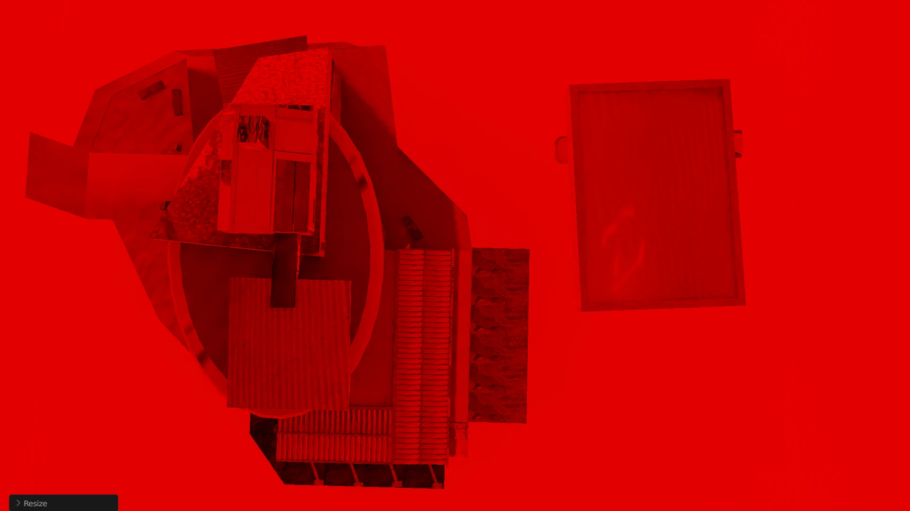
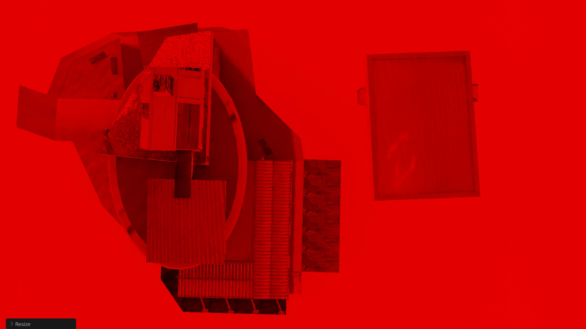
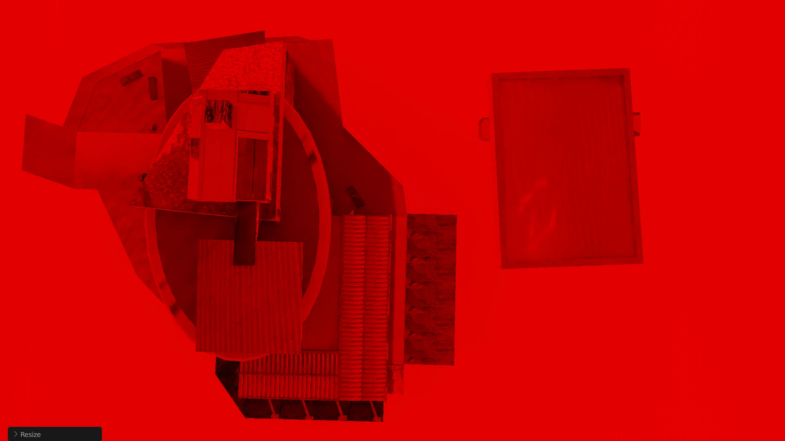
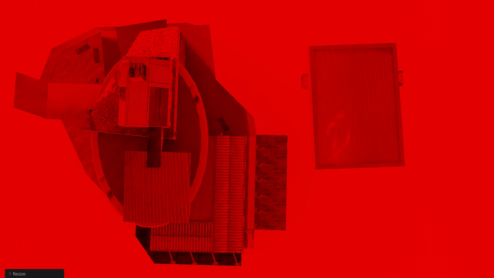

SKINGRAFTING is an ongoing experimentation project around the idea of server-less chatrooms, and sonic playfulness as a way to ground synthetic spaces.
A previous iteration consisted of 2 homemade digital instruments, a modified drumkit, to which the audience was given free access, as well as a 3D model of a gas station.
The process would act in the similar way as the body reactions that go toward healing an open wound, different external component incubating and entering in symbiosis to mold a shared fertile space.